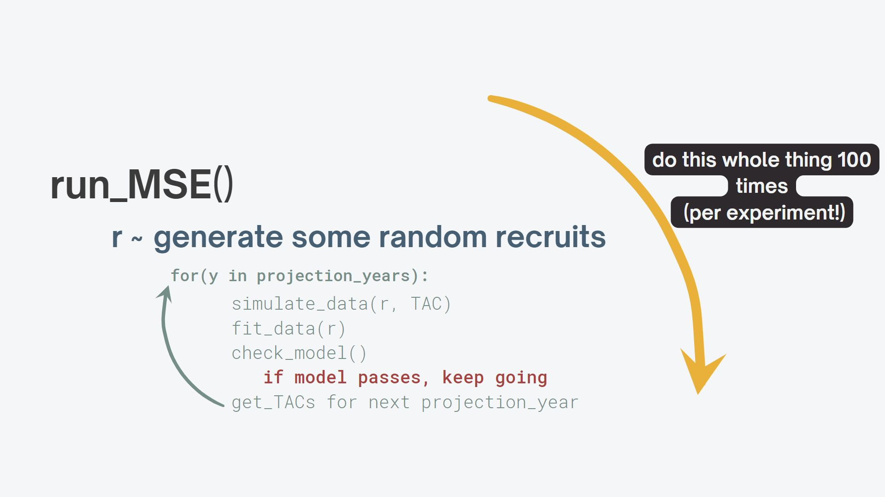
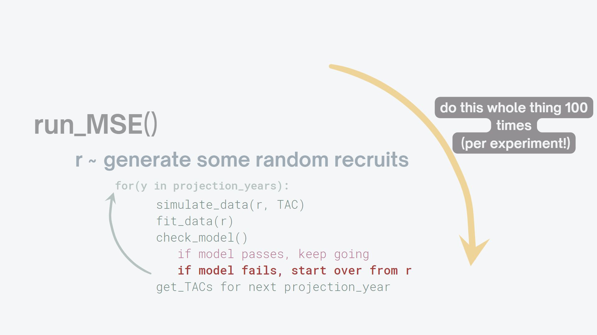

Leveraging try_again() for error catching in MSEs
This post is not a full breakdown of how to structure code for Management Strategy Evaluation (MSE) work. I’m certainly not a pro software engineer. Instead, I was pleased to find a clean way to deal with errors in the hierarchical nature of my MSE workflow that may be of use to others, or to future-me.
Here’s a schematic of what’s happening in my MSE:

As anyone who’s done this type of work before knows, we definitely expect a subset of our simulation runs to ‘fail’ - that is, for the unique simulated data set (which differs here based upon what I’m calling \(r\))in year \(y\), the estimation procedure doesn’t pass whatever criteria we’ve set (could be convergence, a NaN gradient, etc).
A simple break won’t help us here, since that would kill the loop mid-run and require us to manually re-start the higher-level function. A tryCatch also seems appealing, but this would still require recursion (since we’d have to embded a call to run_MSE() in the Catch wrapper, within run_MSE() itself…not ideal).
Our desired behavior would have us hit play once on the run_MSE() function, and trust that any estimation model that fails will be safely handled:

I was able to accomplish this elegantly using testthat::try_again(). I simply indicated the number of times I wanted to attempt my run_MSE() function, and included a stop() argument inside check_model() (so that a true error is thrown when the estimator fails).
When testthat::try_again() detects this failure, it restarts the run_MSE() function, which increments along a vector of random seeds, until it hits something functional. This can be adapted to lots of purposes, and one could readily keep track of the identity/quantity of estimators that failed.
Even better, I can pop this into a one-line call to replicate, which functionally requests a total number of sucesses equal to nReplicates. A key for this to work is to ensure whatever will be incremented along for each call to run_MSE() (in my case, the vector of seeds) is long enough to account for every attempted replicate times the potential number of tries. In the example below, this would be 99 tries x 100 nReplicates = 9900 seeds.
sim <- replicate(nReplicates, {try_again(99,run_MSE(nprojyrs, spaceID))})